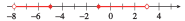

Section A.2 Linear Equations and Inequalities
An equation is just a mathematical statement that two expressions are equal. Equations relating two variables are particularly useful. If we know the value of one of the variables, we can find the corresponding value of the other variable by solving the equation.
Example A.8.
The equation \(w = 6h\) gives Loren's wages, \(w\text{,}\) in terms of the number of hours she works, \(h\text{.}\) How many hours does Loren need to work next week if she wants to earn $\(225\text{?}\)
We know that \(w = 225\text{,}\) and we would like to know the value of \(h\text{.}\) We substitute the value for \(w\) into our equation and then solve for \(h\text{.}\)
Loren must work \(37.5\) hours in order to earn $\(225\text{.}\) In reality, Loren will probably have to work for \(38\) hours, because most employers do not pay for portions of an hour's work. Thus, Loren needs to work for \(38\) hours.
To solve an equation we can generate simpler equations that have the same solutions. Equations that have identical solutions are called equivalent equations. For example,
and
are equivalent equations because the solution of each equation is \(4\text{.}\) Often we can find simpler equivalent equations by undoing in reverse order the operations performed on the variable.
Subsection Solving Linear Equations
Linear, or first-degree, equations can be written so that every term is either a constant or a constant times the variable. The equations above are examples of linear equations. Recall the following rules for solving linear equations.
To Generate Equivalent Equations.
We can add or subtract the same number on both sides of an equation.
We can multiply or divide both sides of an equation by the same number (except zero).
Applying either of these rules produces a new equation equivalent to the old one and thus preserves the solution.
We use the rules to isolate the variable on one side of the equation.
Example A.9.
Solve the equation \(~~3x - 5 = x + 3\text{.}\)
We first collect all the variable terms on one side of the equation, and the constant terms on the other side.
The solution is \(4\text{.}\) (You can check the solution by substituting \(4\) into the original equation to show that a true statement results.)
The following steps should enable you to solve any linear equation. Of course, you may not need all the steps for a particular equation.
To Solve a Linear Equation:.
-
Simplify each side of the equation separately.
Apply the distributive law to remove parentheses.
Collect like terms.
By adding or subtracting appropriate terms on both sides of the equation, get all the variable terms on one side and all the constant terms on the other.
Divide both sides of the equation by the coefficient of the variable.
Example A.10.
Solve \(~~3(2x - 5) - 4x = 2x - (6 - 3x)\text{.}\)
We begin by simplifying each side of the equation.
Next, we collect all the variable terms on the left side of the equation, and all the constant terms on the right side.
Finally, we divide both sides of the equation by the coefficient of the variable.
The solution is \(-3\text{.}\)
Subsection Formulas
A formula is an equation that relates several variables. For example, the equation
gives the perimeter of a rectangle in terms of its length and width.
Suppose we have some wire fence to enclose an exercise area for rabbits, and we would like to see what dimensions are possible for different rectangles with that perimeter. In this case, it would be more useful to have a formula for the length of the rectangle in terms of its perimeter and its width. We can find such a formula by solving the perimeter formula for \(l\) in terms of \(P\) and \(w\text{.}\)
The result is a new formula that gives the length of a rectangle in terms of its perimeter and its width.
Example A.11.
The formula \(~5F = 9C + 160~\) relates the temperature in degrees Fahrenheit, \(F\text{,}\) to the temperature in degrees Celsius, \(C\text{.}\) Solve the formula for \(C\) in terms of \(F\text{.}\)
We begin by isolating the term that contains \(C\text{.}\)
We can also write the formula for \(C\) in terms of \(F\) as \(~C = \dfrac{5}{9}F - \dfrac{160}{9}\text{.}\)
Example A.12.
Solve \(~3x - 5y = 40~\) for \(y\) in terms of \(x\text{.}\)
We isolate \(y\) on one side of the equation.
Subsection Linear Inequalities
The symbol \(\blert{\gt}\) is called an inequality symbol, and the statement \(a\gt b\) is called an inequality. There are four inequality symbols:
Inequalities that include the symbols \(\gt\) or \(\le\) are called strict inequalities; those that include \(\ge\) or \(\le\) are called nonstrict.
If we multiply or divide both sides of an inequality by a negative number, the direction of the inequality must be reversed. For example, if we multiply both sides of the inequality
by \(-3\text{,}\) we get
Because of this property, the rules for solving linear equations must be revised slightly for solving linear inequalities.
To Solve a Linear Inequality:.
We may add or subtract the same number to both sides of an inequality without changing its solutions.
We may multiply or divide both sides of an inequality by a positive number without changing its solutions.
If we multiply or divide both sides of an inequality by a negative number, we must reverse the direction of the inequality symbol.
Example A.13.
Solve the inequality \(~4 - 3x \ge -17\text{.}\)
Use the rules above to isolate \(x\) on one side of the inequality.
Notice that we reversed the direction of the inequality when we divided by \(-3\text{.}\) Any number less than or equal to \(7\) is a solution of the inequality.
A compound inequality involves two inequality symbols.
Example A.14.
Solve \(~4 \le 3x + 10 \le 16\text{.}\)
We isolate \(x\) by performing the same operations on all three sides of the inequality.
The solutions are all numbers between \(-2\) and \(2\text{,}\) inclusive.
Subsection Interval Notation
The solutions of the inequality in Example A.14 form an interval. An interval is a set that consists of all the real numbers between two numbers \(a\) and \(b\text{.}\)
The set \(-2 \le x \le 2\) includes its endpoints \(-2\) and \(2\text{,}\) so we call it a closed interval, and we denote it by \([-2, 2]\text{.}\) Its graph is shown in figure (a). The square brackets tell us that the endpoints are included in the interval. An interval that does not include its endpoints, such as \(-2 \lt x \lt 2\text{,}\) is called an open interval, and we denote it with round brackets, \((-2, 2)\text{.}\) Its graph is shown in figure (b).

Caution A.15.
Do not confuse the open interval \((-2, 2)\) with the point \((-2, 2)\text{!}\) The notation is the same, so you must decide from the context whether an interval or a point is being discussed.
We can also discuss infinite intervals, such as \(~x\lt 3~\) and \(~x\ge -1~\text{,}\) shown in the figure below. We denote the interval \(~x\lt 3~\) by \((-\infty, 3)\text{,}\) and the interval \(~x\ge -1~\) by \([-1, \infty)\text{.}\) The symbol \(\infty\text{,}\) for infinity, does not represent a specific real number; it indicates that the interval continues forever along the real line.
Finally, we can combine two or more intervals into a larger set. For example, the set consisting of \(x\lt -1\) or \(x\gt 2\text{,}\) shown below, is the union of two intervals and is denoted by \((-\infty,-2) \cup (2,\infty)\text{.}\)
Many solutions of inequalities are intervals or unions of intervals.
Example A.16.
Write each of the solution sets with interval notation and graph the solution set on a number line.
\(\displaystyle 3 \le x \lt 6\)
\(\displaystyle x \ge -9\)
\(\displaystyle x\le 1 ~~\text{ or }~~ x\gt 4\)
\(\displaystyle -8 \lt x \le -5 ~~\text{ or }~~ -1 \le x \lt 3\)
-
\([3, 6)\text{.}\) This is called a half-open or half-closed interval.

-
\([-9,\infty)\text{.}\) We always use round brackets next to the symbol \(\infty\) because \(\infty\) is not a specific number and is not included in the set.

-
\((-\infty, 1] \cup (4, \infty)\text{.}\) The word or describes the union of two sets.
-
\((-8,-5] \cup [-1, 3)\text{.}\)

Subsection Section Summary
Subsubsection Vocabulary
Look up the definitions of new terms in the Glossary.
Equation
Closed interval
Compound inequality
Inequality
Linear equation
Equivalent equation
Open interval
Interval
Strict inequality
Formula
Solve an equation
Union
Subsubsection SKILLS
Practice each skill in the exercises listed.
Solve a linear equation: #1–10
Solve a formula for one variable in terms of the others: #11–28
Solve a linear inequality: #26–34
Solve a compound inequality: #35–41
Write solutions to inequalities in interval notation: #41–50
Exercises Exercises A.2
Exercise Group.
For Problems 1-10, solve the linear equation.
1.
\(3x+5=26 \)
2.
\(2+5x=37 \)
3.
\(3(z+2)=37 \)
4.
\(2(z-3)=15 \)
5.
\(3y-2(y-4)=12-5y \)
6.
\(5y-3(y+1)=14+2y \)
7.
\(0.8w -2.6=1.4w+0.3 \)
8.
\(4.8-1.3w=0.7w+2.1 \)
9.
\(0.25t+0.10(t-4)=11.60 \)
10.
\(0.12t+0.08(t+10,000)=12,000 \)
Exercise Group.
For problems 11-20, solve for \(y\) in terms of \(x\text{.}\)
11.
\(4x+3y=-2\)
12.
\(x-2y=-7\)
13.
\(\dfrac{x}{8}-\dfrac{y}{2}=1 \)
14.
\(\dfrac{x}{5}+\dfrac{y}{7}=1 \)
15.
\(3x+\dfrac{2}{7} y=1 \)
16.
\(\dfrac{5}{6} x+8y=1 \)
17.
\(-(x-1)=6(y-3) \)
18.
\(2y-4=3(x+5) \)
19.
\(\dfrac{y+8}{x-1}=\dfrac{-7}{4} \)
20.
\(\dfrac{2}{3}=\dfrac{y-5}{x+2} \)
Exercise Group.
For Problems 21-28, solve the formula for the specified variable.
21.
\(v=k+gt,~~\text{ for }t\)
22.
\(S=3\pi d+\pi a,~~\text{ for }d\)
23.
\(S=2w(w+2h),~~\text{ for }h\)
24.
\(A=P(1+rt),~~\text{ for }r\)
25.
\(P=a+(n-1)d,~~\text{ for }n\)
26.
\(R=2d+h(a+b),~~\text{ for }b\)
27.
\(A=\pi rh+\pi r^2,~~\text{ for }h\)
28.
\(A=2w^2+4lw,~~\text{ for }l\)
Exercise Group.
For Problems 29-40, solve the inequality.
29.
\(3x-2\gt 1+2x\)
30.
\(2x+3\le x-1\)
31.
\(\dfrac{-2x-6}{-3}\gt 2 \)
32.
\(\dfrac{-2x-3}{2}\le -5 \)
33.
\(\dfrac{2x-3}{3}\le \dfrac{3x}{-2} \)
34.
\(\dfrac{3x-4}{-2}\gt \dfrac{-2x}{5} \)
35.
\(-6\lt 4x+10\lt 20 \)
36.
\(3\lt -2x-5\lt 15 \)
37.
\(-9\le -3x+6\lt 2 \)
38.
\(4\lt 8x+12\le 16 \)
39.
\(5\lt\dfrac{8-2x}{4}\le 7 \)
40.
\(-1\le\dfrac{4x-6}{-3}\le 0 \)
Exercise Group.
For Problems 41-50, write the set with interval notation, and graph the set on a number line.
41.
\(-5\lt x \le 3\)
42.
\(0\le x \lt 4 \)
43.
\(0\ge x \ge -4 \)
44.
\(8\gt x \gt 5 \)
45.
\(x\gt -6 \)
46.
\(x\le 1 \)
47.
\(x\lt -3~\text{ or }~x\ge -1 \)
48.
\(x\ge 3~\text{ or }~x\le -3 \)
49.
\(-6\le x \lt -4~\text{ or } ~-2\lt x\le 0 \)
50.
\(x\lt 2~ \text{ or } ~2\lt x \lt 3 \)